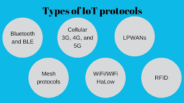
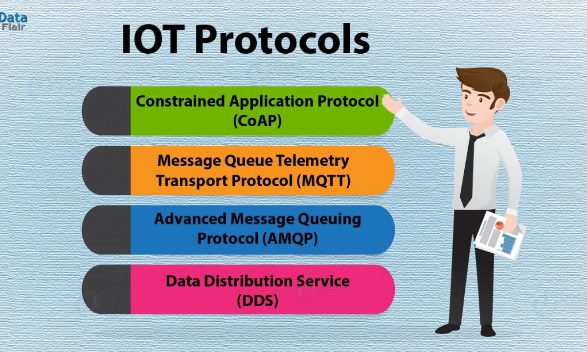
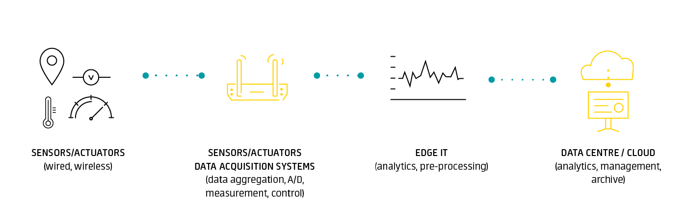

INTERNET OF THINGS
- Version: 2.0
- Author: Shawn Mwitia
- Created: 19 July, 2021
- Update: 27 July, 2021
What is the Internet of Things?
The internet of things, or IoT, is a system of interrelated computing devices, mechanical and digital machines, objects, animals or people that are provided with unique identifiers (UIDs) and the ability to transfer data over a network without requiring human-to-human or human-to-computer interaction.
From https://internetofthingsagenda.techtarget.com/definition/Internet-of-Things-IoT

IoT Communication Protocols
IoT protocols are a crucial part of the IoT technology stack — without them, hardware would be rendered useless as the IoT protocols enable it to exchange data in a structured and meaningful way.
Network Protocols
From https://www.nabto.com/guide-iot-protocols-standards/
IoT network protocols are used to connect devices over a network. These sets of protocols are typically used over the internet.
a) Bluetooth (BLE - Bluetooth Low Energy)
Bluetooth is a technology that allows wireless connection of various electronic devices, such as a telephone, keyboard, computer, laptop, mouse, palmtop, printer, headset or speakerphone, and more. The standard uses radio waves in the 2.4 GHz ISM frequency band and the device enabling the use of this standard is a Bluetooth adapter.
b) WiFi
WiFi uses radio waves that broadcast information on specific frequencies, such as 2.4 GHz or 5 GHz channels. Both frequency ranges have a number of channels through which different wireless devices can work, which helps to distribute the load so that the individual connections of the devices are not interrupted. This largely prevents overflowing of wireless networks.
c) Zigbee
Zigbee's specifications slightly eclipse the more universally used Bluetooth. It has lower power consumption, low data-range, high security, and has a longer range of communication. It’s a relatively simple packet data exchange protocol and is often implemented in devices with small requirements, such as microcontrollers and sensors.
d) Z-Wave
Z-Wave is an increasingly-popular IoT protocol. It’s a wireless, radio frequency (RF) cased communication technology that’s primarily used for IoT home applications.
Data Protocols
From https://www.nabto.com/guide-iot-protocols-standards/
IoT data protocols are used to connect low-power IoT devices. They provide communication with hardware on the user side – without the need for any internet connection. The connectivity in IoT data protocols and standards is through a wired or cellular network.
a) Constrained Application Protocol (CoAP)
A CoAp (Constrained Application Protocol) is an application layer protocol. It’s designed to address the needs of HTTP-based IoT systems. HTTP stands for Hypertext Transfer Protocol, and it’s the foundation of data communication for the World Wide Web.
b) Message Queuing Telemetry Transport (MQTT)
An MQTT (Message Queuing Telemetry Transport) is a lightweight IoT data protocol. It features a publisher-subscriber messaging model and allows for simple data flow between different devices.
c) Advanced Message Queuing Protocol (AMQP)
An Advanced Message Queuing Protocol (AMQP) is an open standard application layer protocol used for transactional messages between servers.
d) Data Distribution Service (DDS)
DDS (Data Distribution Service) is another scalable IoT protocol that enables high-quality communication in IoT. Similar to the MQTT, DDS also works to a publisher-subscriber model. It can be deployed in multiple settings, from the cloud to very small devices. This makes it perfect for real-time and embedded systems.
What is the IoT Architecture?
From https://www.avsystem.com/blog/what-is-iot-architecture/ and https://medium.datadriveninvestor.com/4-stages-of-iot-architecture-explained-in-simple-words-b2ea8b4f777f
While every IoT system is different, the foundation for each Internet of Things architecture as well as its general data process flow is roughly the same.
Stage 1: Sensors and Actuators: sensing and actuating stage covers and adjusts everything needed in the physical world to gain the necessary insights for further analysis.
Stage 2: Sensor data aggregation systems and analog-to-digital data conversion: In short, Stage 2 makes data both digitalized and aggregated. The vital importance of this stage is to process the enormous amount of information collected on the previous stage and squeeze it to the optimal size for further analysis.
Stage 3: Edge analytics: The prepared data is transferred to the IT world. In particular, edge IT systems perform enhanced analytics and pre-processing here. At the same time, some additional processing may happen here, prior to the stage of entering the data center.
Stage 4: Analysis, management, and storage of data: A data centre or a cloud-based system is designed to store, process and analyse massive volumes of data for deeper insights using powerful data analytics engines and machine learning mechanisms which edge systems would never be able to support.